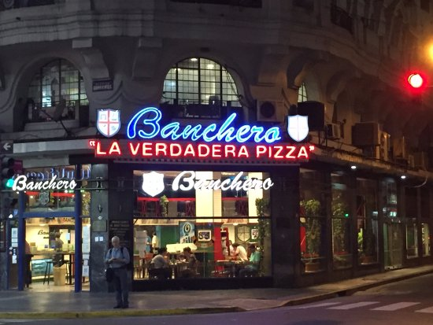

Banchero
Descripcion:
En la Boca, la Av. Almirante Brown ("Bron" según el decir de los vecinos), luce orgullosamente las mejores pizzerías del barrio, y sinlugar a dudas, Banchero es la más tradicional. Agustín Banchero llegó a la Boca del Riachuelo en 1893, procedente de su Génova natal. Instaló una pequeña panadería en la calle Olavarría en la que trabajó con su hijo Juan. Allí nació la fugazza con queso; rápidamente se convirtió en verdadero patrimonio gastronómico de La Boca, recorrió y triunfó en todo el mundo.
Direccion: Av. Almirante Brown 1200.